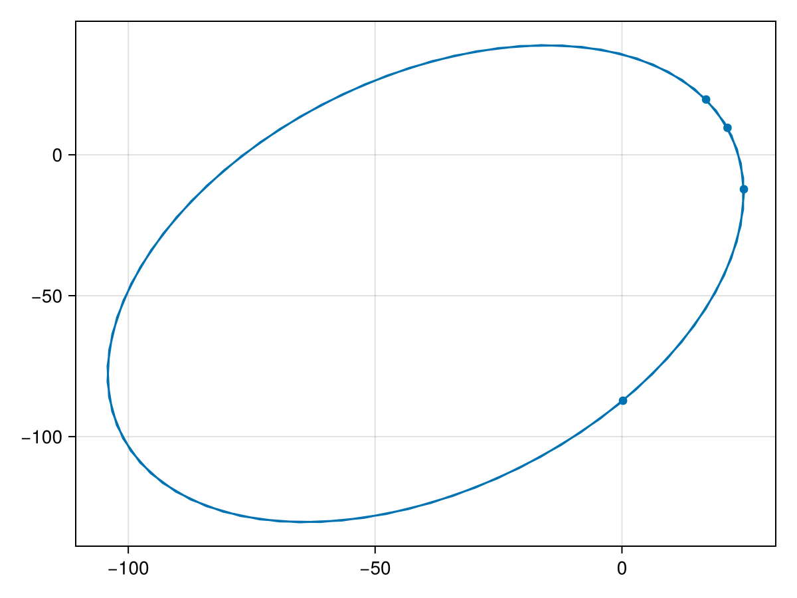
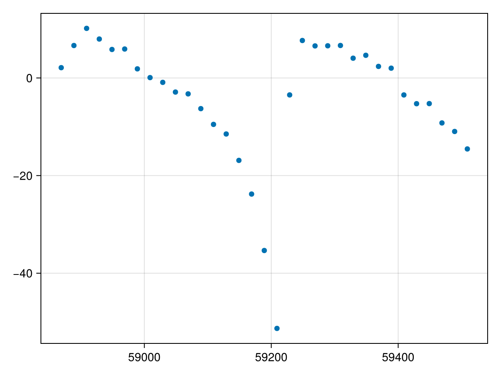
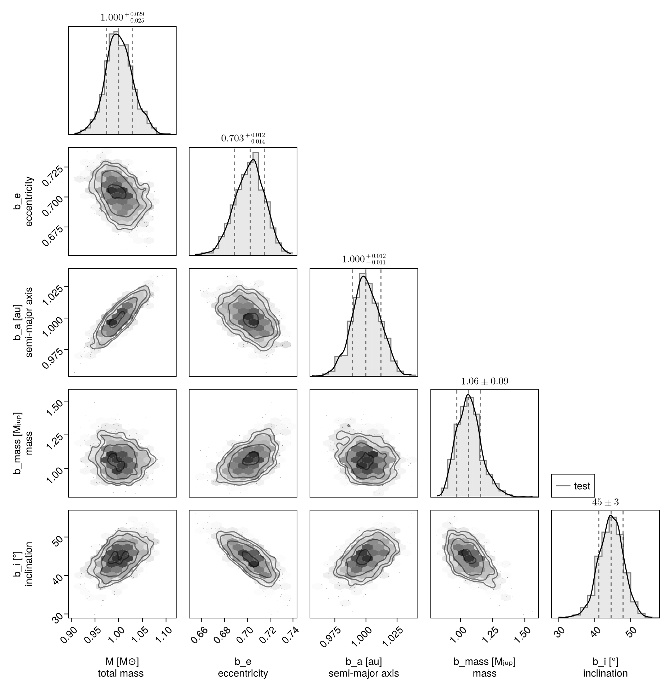
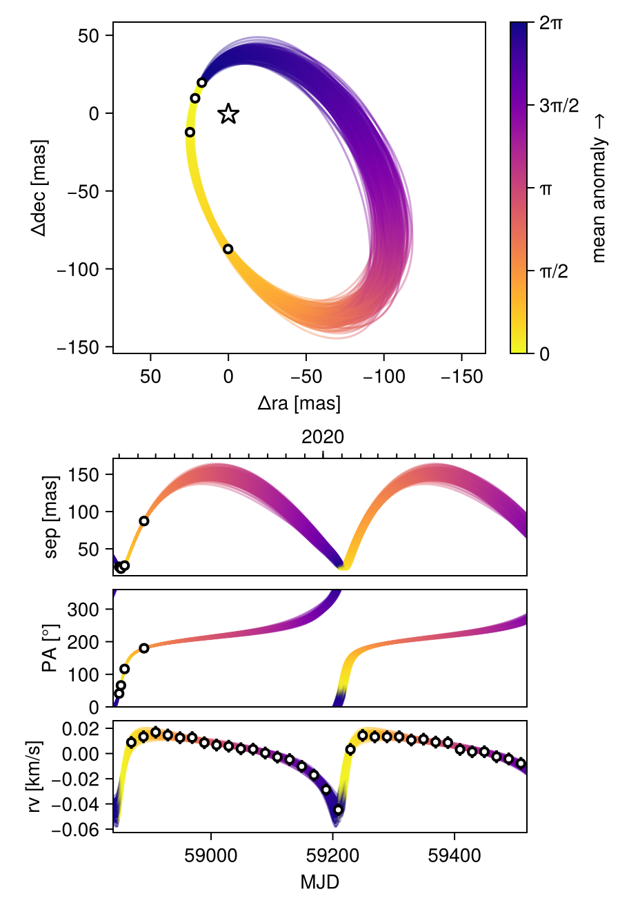

Fit Radial Velocity and Astrometry
You can use Octofitter to jointly fit relative astrometry data and radial velocity data. Below is an example. For more information on these functions, see previous guides.
Import required packages
using Octofitter
using OctofitterRadialVelocity
using CairoMakie
using PairPlots
using Distributions
using PlanetOrbitsWe now use PlanetOrbits.jl to create sample data. We start with a template orbit and record it's positon and velocity at a few epochs.
orb_template = orbit(
a = 1.0,
e = 0.7,
i= pi/4,
Ω = 0.1,
ω = 1π/4,
M = 1.0,
plx=100.0,
m =0,
tp =58849
)
Makie.lines(orb_template)
Sample position and store as relative astrometry measurements:
epochs = [58849,58852,58858,58890]
astrom = PlanetRelAstromLikelihood(Table(
epoch=epochs,
ra=raoff.(orb_template, epochs),
dec=decoff.(orb_template, epochs),
σ_ra=fill(1.0, size(epochs)),
σ_dec=fill(1.0, size(epochs)),
))PlanetRelAstromLikelihood Table with 5 columns and 4 rows:
epoch ra dec σ_ra σ_dec
┌───────────────────────────────────────
1 │ 58849 17.0428 19.6097 1.0 1.0
2 │ 58852 21.3841 9.55674 1.0 1.0
3 │ 58858 24.6966 -12.227 1.0 1.0
4 │ 58890 0.215405 -87.2625 1.0 1.0And plot our simulated astrometry measurments:
fig = Makie.lines(orb_template,)
Makie.scatter!(astrom.table.ra, astrom.table.dec)
fig
Generate a simulated RV curve from the same orbit:
using Random
Random.seed!(1)
epochs = 58849 .+ (20:20:660)
planet_sim_mass = 0.001 # solar masses here
rvlike = StarAbsoluteRVLikelihood(Table(
epoch=epochs,
rv=radvel.(orb_template, epochs, planet_sim_mass) .+ randn.() .+ 100randn(),
σ_rv=fill(5.0, size(epochs)),
))
Makie.scatter(rvlike.table.epoch[:], rvlike.table.rv[:])
Now specify model and fit it:
@planet b Visual{KepOrbit} begin
e ~ Uniform(0,0.999999)
a ~ truncated(Normal(1, 1),lower=0)
mass ~ truncated(Normal(1, 1), lower=0)
i ~ Sine()
Ω ~ UniformCircular()
ω ~ UniformCircular()
θ ~ UniformCircular()
tp = θ_at_epoch_to_tperi(system,b,58849.0) # reference epoch for θ. Choose an MJD date near your data.
end astrom
@system test begin
M ~ truncated(Normal(1, 0.04),lower=0) # (Baines & Armstrong 2011).
plx = 100.0
jitter ~ truncated(Normal(0,10),lower=0)
rv0 ~ Normal(0,10)
end rvlike b
model = Octofitter.LogDensityModel(test; autodiff=:ForwardDiff,verbosity=4)
using Random
rng = Xoshiro(0) # seed the random number generator for reproducible results
results = octofit(rng, model)Chains MCMC chain (1000×31×1 Array{Float64, 3}):
Iterations = 1:1:1000
Number of chains = 1
Samples per chain = 1000
Wall duration = 1.46 seconds
Compute duration = 1.46 seconds
parameters = M, jitter, rv0, plx, b_e, b_a, b_mass, b_i, b_Ωy, b_Ωx, b_ωy, b_ωx, b_θy, b_θx, b_Ω, b_ω, b_θ, b_tp
internals = n_steps, is_accept, acceptance_rate, hamiltonian_energy, hamiltonian_energy_error, max_hamiltonian_energy_error, tree_depth, numerical_error, step_size, nom_step_size, is_adapt, loglike, logpost, tree_depth, numerical_error
Summary Statistics
parameters mean std mcse ess_bulk ess_tail rha ⋯
Symbol Float64 Float64 Float64 Float64 Float64 Float6 ⋯
M 1.0014 0.0291 0.0009 1161.5197 728.6441 1.000 ⋯
jitter 0.7797 0.6163 0.0193 665.3837 493.2944 1.000 ⋯
rv0 -6.6823 0.9291 0.0267 1229.2328 936.4889 1.001 ⋯
plx 100.0000 0.0000 NaN NaN NaN Na ⋯
b_e 0.7019 0.0132 0.0004 981.5533 608.1669 0.999 ⋯
b_a 1.0002 0.0116 0.0004 927.8724 715.8530 1.000 ⋯
b_mass 1.0687 0.0979 0.0033 923.9839 589.9003 1.001 ⋯
b_i 0.7767 0.0606 0.0023 739.0943 699.6500 1.001 ⋯
b_Ωy 0.9954 0.0983 0.0028 1233.1215 738.0395 0.999 ⋯
b_Ωx 0.1033 0.0548 0.0023 560.0893 660.1217 0.999 ⋯
b_ωy 0.7151 0.0969 0.0038 703.0000 546.7310 1.000 ⋯
b_ωx 0.7035 0.0975 0.0038 657.1163 653.6702 0.999 ⋯
b_θy 0.7570 0.0756 0.0023 1029.7946 807.7701 1.001 ⋯
b_θx 0.6544 0.0676 0.0020 1200.7314 743.7114 1.000 ⋯
b_Ω 0.1036 0.0538 0.0023 578.0747 601.8194 1.000 ⋯
b_ω 0.7771 0.0932 0.0038 621.8727 595.1338 1.000 ⋯
b_θ 0.7128 0.0306 0.0009 1054.8866 757.8167 0.999 ⋯
b_tp 58659.4524 182.6064 7.2608 824.1100 948.4357 0.999 ⋯
2 columns omitted
Quantiles
parameters 2.5% 25.0% 50.0% 75.0% 97.5%
Symbol Float64 Float64 Float64 Float64 Float64
M 0.9430 0.9821 0.9999 1.0200 1.0604
jitter 0.0280 0.2739 0.6528 1.1448 2.2457
rv0 -8.5684 -7.3349 -6.6883 -6.0452 -4.8830
plx 100.0000 100.0000 100.0000 100.0000 100.0000
b_e 0.6755 0.6932 0.7026 0.7110 0.7264
b_a 0.9777 0.9929 0.9999 1.0081 1.0227
b_mass 0.9024 0.9984 1.0622 1.1263 1.2903
b_i 0.6530 0.7373 0.7774 0.8156 0.8918
b_Ωy 0.8053 0.9334 0.9900 1.0555 1.2040
b_Ωx 0.0060 0.0653 0.1020 0.1378 0.2172
b_ωy 0.5439 0.6462 0.7097 0.7767 0.9287
b_ωx 0.5196 0.6337 0.7028 0.7694 0.8974
b_θy 0.6186 0.7025 0.7527 0.8032 0.9223
b_θx 0.5295 0.6092 0.6527 0.6959 0.8069
b_Ω 0.0057 0.0677 0.1040 0.1389 0.2108
b_ω 0.5939 0.7131 0.7793 0.8422 0.9523
b_θ 0.6525 0.6917 0.7142 0.7332 0.7704
b_tp 58479.0633 58483.0227 58488.9011 58848.7104 58848.9713
Display results as a corner plot:
octocorner(model, results, small=true)
Plot RV curve, phase folded curve, and binned residuals:
OctofitterRadialVelocity.rvpostplot(model, results,)Display RV, PMA, astrometry, relative separation, position angle, and 3D projected views:
octoplot(model, results)